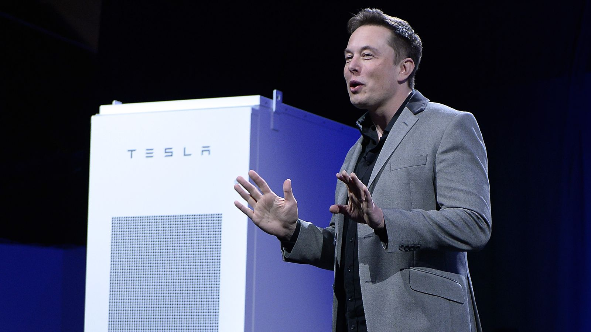

Tesla Is Turning 50,000 Homes In South Australia Into Power Generators At No Cost To Residents
Tesla has signed a deal with the government of South Australia to install 50,000
solar-power systems on homes, at no cost to residents.

South Australia has suffered from blackouts in recent years amid fears of a looming energy crisis. Last year, Tesla CEO Elon Musk claimed he could help solve the problem by building a giant battery farm within 100 days.
The plan involves installing a 5kW solar panel system and a Tesla Powerwall 2 battery on public housing properties across the state over the next four years, creating the world's largest "virtual power plant."
The 129-megawatt-hour battery was installed weeks ahead of schedule and is estimated to provide reliable electricity to up to 3,000 homes in the state, Newsweek reports.
The initiative is expected to lower household electricity bills by 30 percent, according to the consultancy firm Frontier Economics.
South Australia is developing a 21st Century power system ahead of anybody else," said Danny Price, managing director of Frontier Economics.
"It really is leading the way in terms of the way in which a kind of modern power system looks like."